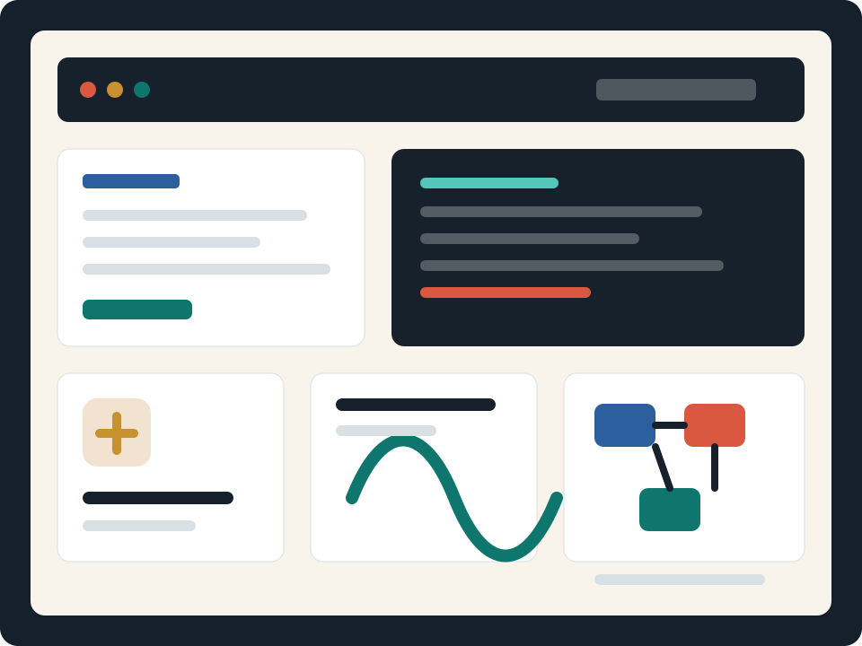

Desarrollo web a medida
Interfaces rápidas, responsivas y conectadas a backend para productos, portales y sistemas internos.
Mario de Jesús Paz Guevara
Ayudo a empresas y emprendedores a convertir ideas en plataformas web, APIs, automatizaciones y sistemas internos bien pensados desde la arquitectura hasta el despliegue.

Servicios
Trabajo contigo para reducir incertidumbre, priorizar lo importante y entregar software que pueda mantenerse después del lanzamiento.
Interfaces rápidas, responsivas y conectadas a backend para productos, portales y sistemas internos.
Servicios REST, integraciones con terceros, autenticación, pagos, reportes y sincronización de datos.
Flujos que eliminan tareas manuales, conectan herramientas y hacen más confiables los procesos diarios.
Revisión de arquitectura, selección de stack, diagnóstico de rendimiento y planes de mejora realistas.
Experiencia
Puedo incorporarme a un proyecto existente o liderar el desarrollo desde cero, cuidando los detalles que hacen que el software sea útil: requisitos claros, código mantenible, seguridad, despliegue y soporte.
Definición de alcance, roadmap técnico y entregas iterativas para validar rápido sin perder calidad.
Arquitecturas limpias, bases de datos bien modeladas, pruebas útiles y despliegues reproducibles.
Avances visibles, decisiones documentadas y recomendaciones honestas para que siempre sepas dónde estás.
Proceso
Revisamos objetivos, usuarios, restricciones y criterios de éxito.
Defino alcance, entregables, tecnología, tiempos y presupuesto estimado.
Desarrollo por iteraciones, con demos y ajustes según prioridad.
Publicación, documentación, monitoreo inicial y siguientes pasos.
Contacto
Cuéntame qué necesitas construir, mejorar o automatizar. Te responderé con una ruta clara para avanzar.